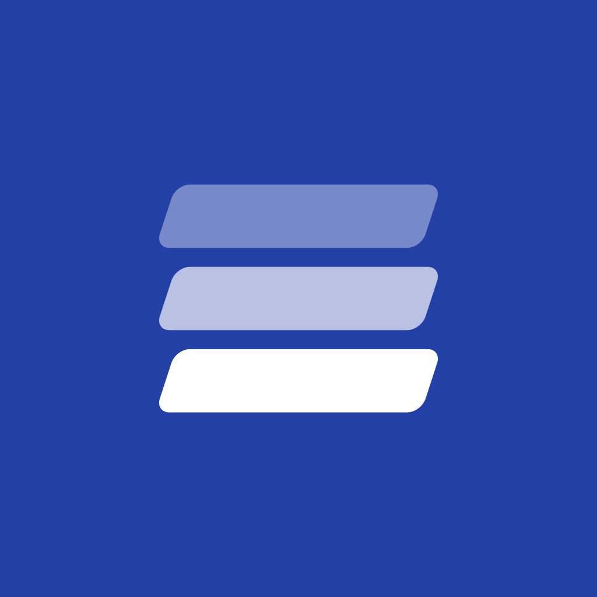
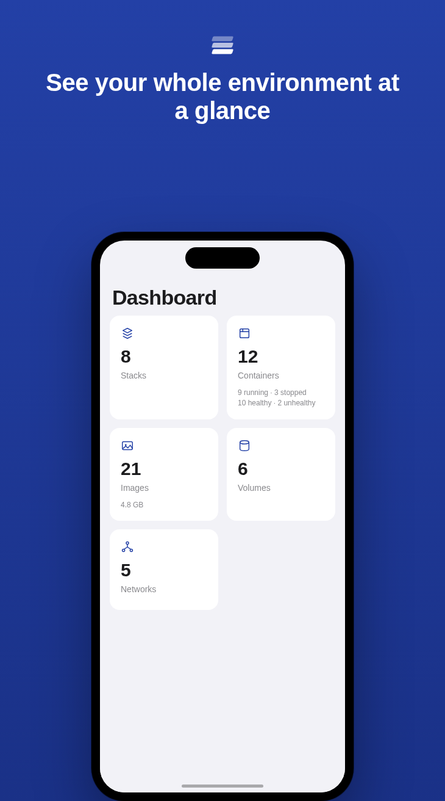
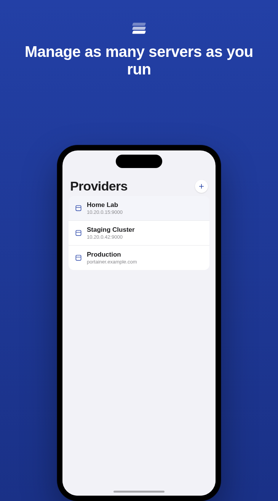
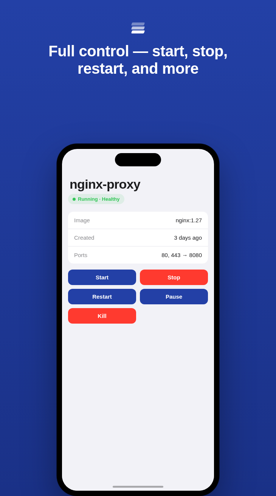
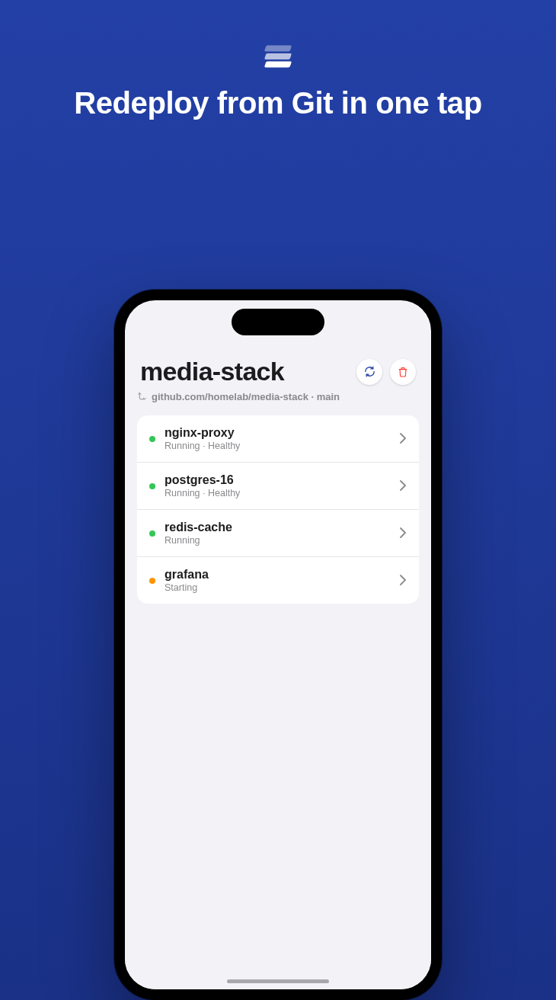

Drydock manages your Docker environments through Portainer or Dockhand — natively on iPhone, iPad, and Mac. No web view, no backend, no account.
Open beta on TestFlight — no waitlist




Add every server you run, see what's happening at a glance, and act on it — without opening a laptop.
Home lab, staging, production — each gets its own credentials, stored in the Keychain and never sent anywhere but the server you told it about.
A dashboard for each environment: stack count, container health, image count and disk usage, volumes, and networks — the numbers you actually check first.
Live health and status, with start, stop, restart, pause, and kill right where you're looking at the container — no menu diving.
Redeploy a Git-backed stack in one tap, edit its repo/branch/auth, or delete it — right from the container list it manages.
Search across stacks, containers, and images from the dashboard, or within any list — results sectioned so you always know what you're looking at.
100% SwiftUI, an adaptive layout that's genuinely useful on iPad and Mac, and 16 languages — not a web view wearing an app icon.
Pick per server — mix Portainer and Dockhand instances in the same provider list.
Drydock doesn't have a server of its own — there's nothing for it to phone home to, and nothing about you or your infrastructure for anyone but you to see.
Drydock is in open beta on TestFlight right now — install it and connect your first server in a couple of minutes.
Join the TestFlight Beta